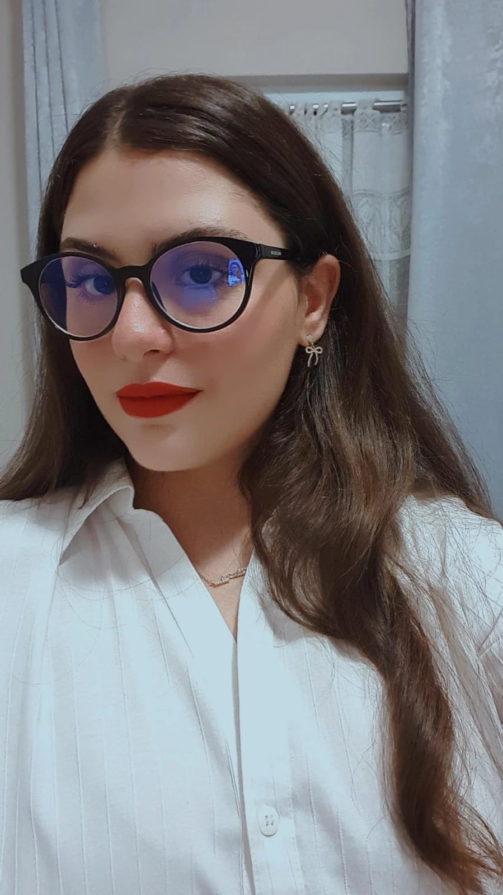
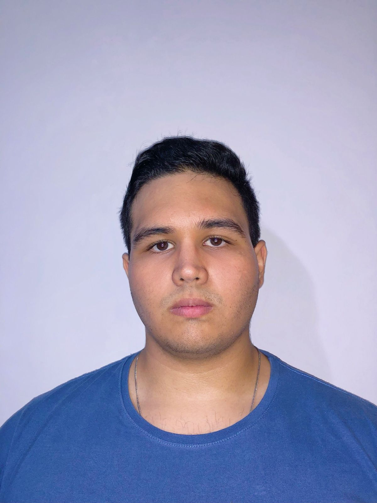

O André Moreira, estudante da UNIVESP, é um Tieteense de 21 anos e profissional de TI há quase 3. Além disso, é um dos criadores do SISMANUT, que basicamente é uma aplicação web de gerenciamento de manutenções criada com um framework do Python, o Django.
Também este estudante sempre teve fascínio pelo mundo da eletrônica e informática, sendo que sua principal brincadeira na infância era desmontar equipamentos elétricos. E hoje ele procura cada vez mais aperfeiçoamento no mundo da TI e desenvolve projetos e facilidades como o SISMANUT.

Me chamo Isabelle Schiefer, tenho 21 anos, atualmente curso Bacharel em Tecnologia da Informação na UNIVESP. Apaixonada por Desenvolvimento Web.
Hobbies: Programar, ler, ouvir música, desenhar, tocar, aprender idiomas e sobre novas culturas.

21 anos, Estudante de Ciências de Dados na UNIVESP, natural da cidade de Itu-SP. Atua na área de administração financeira e de suporte de TI em duas instituições de educação.
Co-fundador do projeto SISMANUT, responsável por sua organização e realização da interface gráfica.